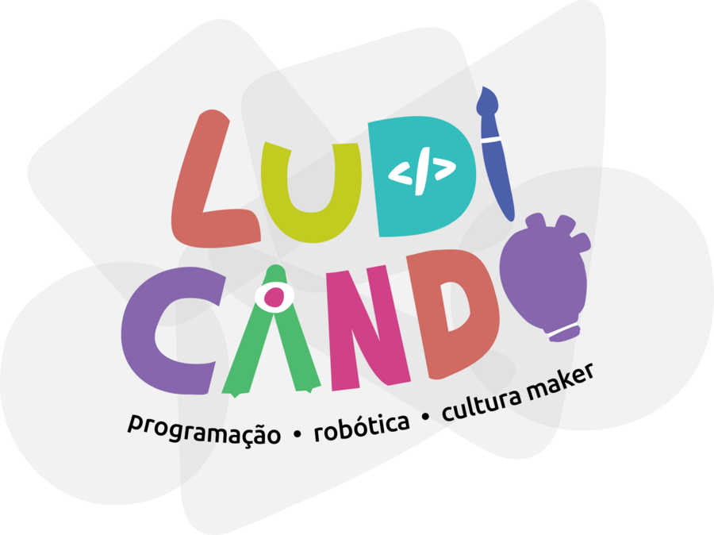

Aqui, a tecnologia é divertida, acessível e educativa.
Um lugar para a criança deixar de só usar a tecnologia e começar a criar com ela: programar, montar, testar, errar e tentar de novo.
A ideia
Aprender por vontade própria
Um ambiente positivo, sem a pressão da nota. A curiosidade da criança é o ponto de partida, e quem acompanha são pessoas que trabalham de verdade com tecnologia.
Programar é outra língua
Como todo idioma, a programação muda o jeito de enxergar o mundo: ajuda a dividir um problema em partes, pensar com calma e chegar a assuntos cada vez mais complexos.
Do abstrato ao concreto
A robótica traz o código para o mundo físico. A ideia que estava na tela vira movimento, luz e som, e o erro aparece na hora para ser entendido.
Aprender a aprender
A tecnologia muda rápido demais para caber num livro didático. Por isso ensinamos a procurar, escolher e avaliar boas fontes, e a seguir aprendendo sozinho.
Software livre primeiro
Preferimos ferramentas livres: elas mostram como as coisas funcionam por dentro e podem ser estudadas, modificadas e compartilhadas. Liberdade de escolher o melhor, sempre.
A família junto
Pais e mães também são convidados a descobrir, perguntar e criar. A tecnologia aproxima quando é apresentada com intenção, acompanhamento e conversa.
Trilhas
Turmas pequenas, separadas por idade, a partir dos 7 anos. Cada criança segue no seu ritmo.
Programação em blocos
Histórias, animações e jogos com Scratch: lógica, sequência e repetição sem precisar decorar comandos.
Robótica educacional
Montar e programar robôs com peças de encaixe, sensores e motores.
Cultura maker
Eletrônica com Arduino, impressão 3D e projetos de mão na massa.
Python e além
Para quem quer escrever código de verdade: programas, jogos e pequenas automações.
Contato
- Endereço: Av. Cel. Germano, 274, sala 21, Centro, Socorro-SP, CEP 13960-111
- Telefone e WhatsApp: (19) 3855-9037
- E-mail: contato@ludicando.club
- Instagram: @ludicando.club
- Facebook: facebook.com/ludicando.club